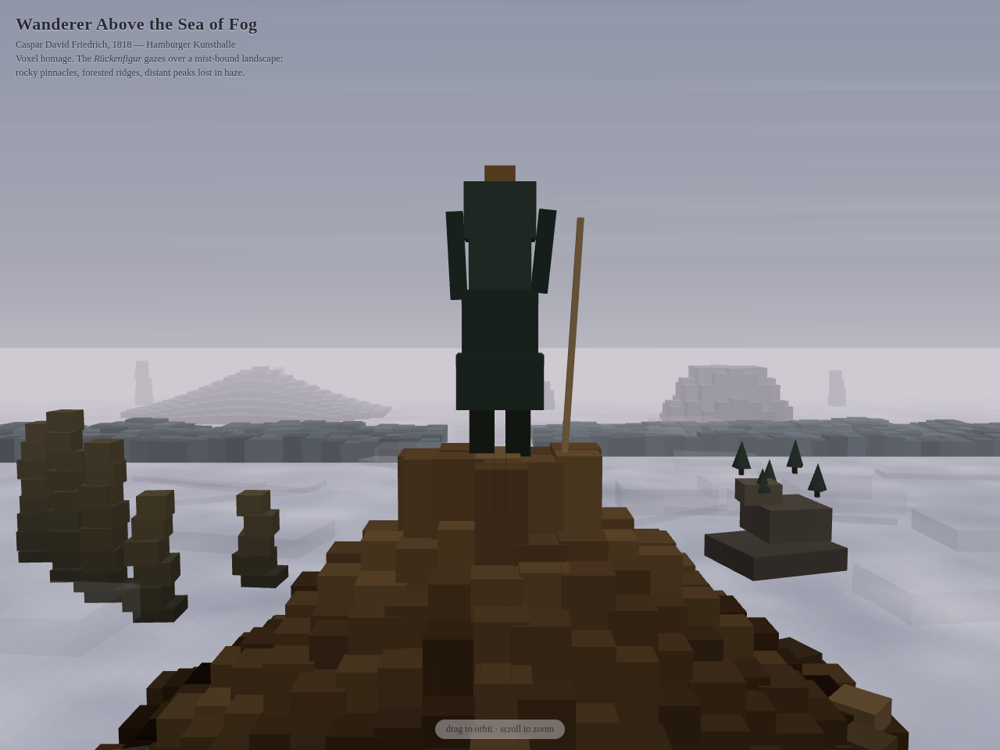
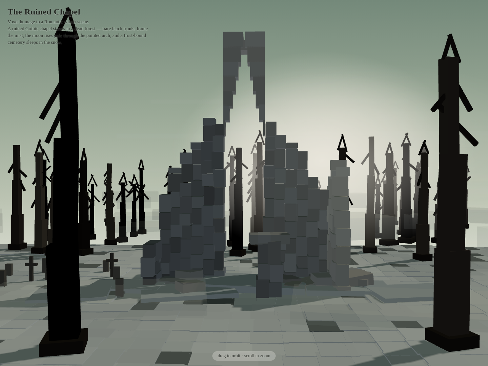
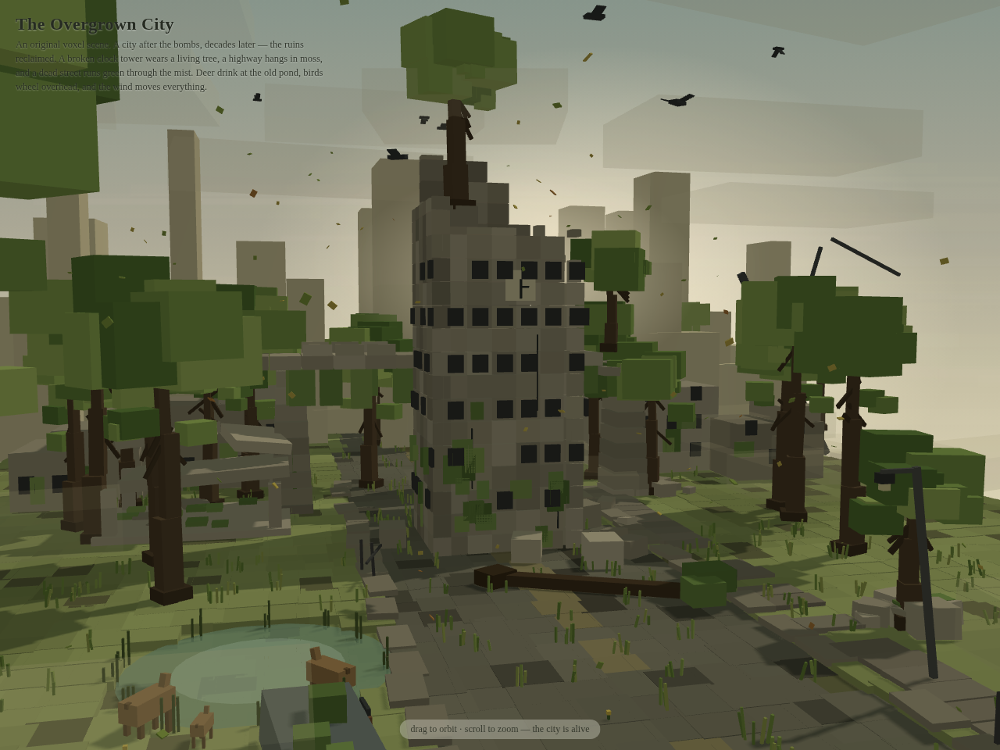
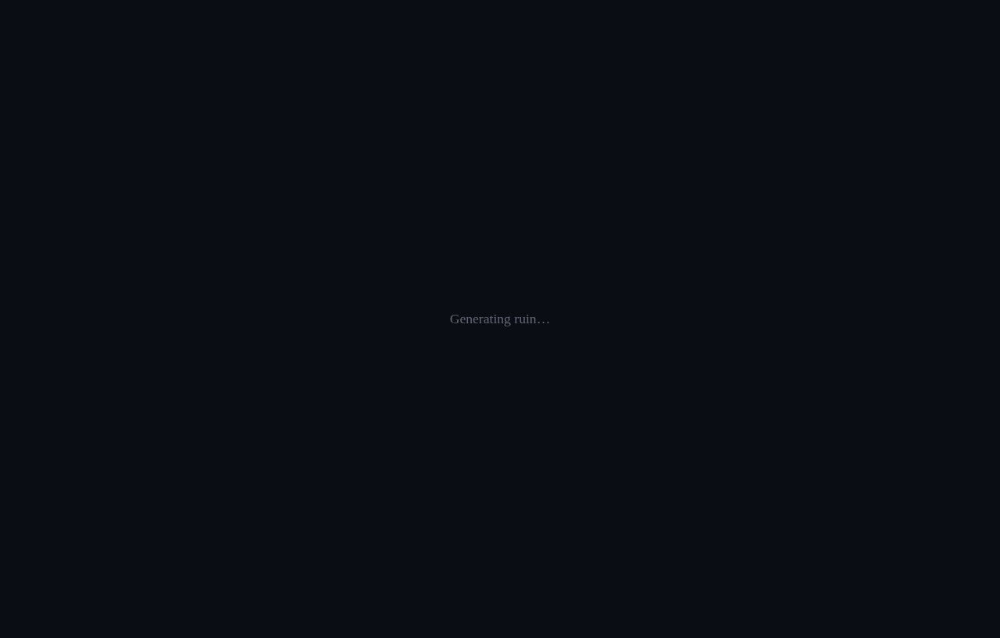

LIVE

Wanderer Above the Sea of Fog
Caspar David Friedrich's 1818 painting, rebuilt in voxels. Volcanic knobs, a wall of fog, birds, and a figure standing where the world ends.
Enter the fog →
LIVE

The Ruined Chapel
An original scene. A chapel that outlived everything else — dead trees, drifting mist, and light moving through a broken window.
Enter the chapel →
LIVE

The Overgrown City
A city after the bombs, decades later — the ruins reclaimed. A mossy viaduct, a broken clock tower wearing a tree, and deer at the old pond.
Enter the city →
LIVE

Gothic Abbey Ruin
A moonlit abbey and graveyard — snow drifting past broken gothic arches, stars overhead, trees swaying in the wind.
Enter the abbey →